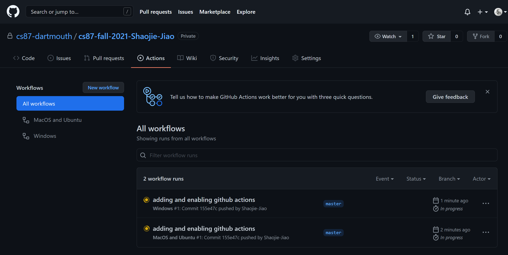
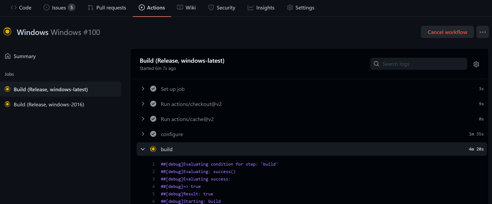
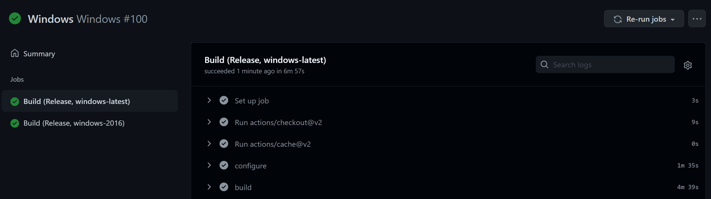

Getting started
Contents
This guide will take you through the main steps required to start working on CS 87/287 programming assignments. We will be using GitHub Classroom along with Github Actions to provide Continuous Integration builds within a modern development workflow.
If you are not enrolled in the class, you can still download the starter code and work through assignments, just jump here and ignore all the GitHub classroom stuff.
At any point, please feel free to reach out to the TA if anything is unclear.
Obtaining the base code
The base code for this class is provided as a git repository. Git is a version control system that allows you to keep track of changes in your code over time, collaborate with other people, track down bugs and more. git is the most widely used version control system today, and this is a good opportunity to learn it if you haven't already.
In this class, you will use git to obtain new and updated versions of the base code. During assignments, you will edit your own local copy of the base code. If we hand out new assignments or add improvements to the base code, git allows you to obtain the updated code and merge it with your local copy without losing your changes.
Before proceeding to the rest of this section, you need to install git to get the base code.
Installing git
If you are using macOS or Windows, then we recommend you install GitHub Desktop, which comes with git as well as a nice graphical front-end (another good client with a few more features is Source Tree). If you are using Linux, then you probably already know what you are doing: install git or a git client with your chosen package manager.
Git is a versatile tool and allows you to achieve more than just obtaining new code from us. If you want to know more, a few external resources we can recommend are GitHub's Git Guides, try git, git-the simple guide, the git immersion tutorial, and the extensive free Pro Git ebook.
Accepting the GitHub Classroom assignment
This will give you access to the base code and create a private repository where your code and reports will live.
- If you do not already have a GitHub account, you will need to create one using your @dartmouth.edu email address. Then, log in.
- Open the link starting with
https:/that was provided to you./ classroom.github.com/ a/ ... - Accept the permissions required by GitHub Classroom, then click "Accept this assignment".
- You now have a private repository that you will use throughout the quarter to implement your programming assignments, as well as to write each assignment's report. Note that this directory is empty. The following steps explain how to get the base code for the assignements.
Cloning the repository to your local machine
- Visit your personal assignment repository on GitHub and click the green "Code" button
- Clone the repository by either:
- Selecting the option to "Open with GitHub Desktop". This should open up a dialog allowing you to select the local path where you'd like to download the code. Do that, and then click the "clone" button.
- Navigate to a directory where you'd like your code to reside, then running the command
git clone <your repo URL>.
This will clone an empty repository. To get the base code for the assignments, you will need to do the following on the commandline (within your local repository directory)
- Only once: add the base repository as a new "remote":
git remote add upstream https:// github.com/ cs87-dartmouth/ Fall2021.git - Pull the code from the base repository:
git pull upstream main
We will remind you to run the second command periodically to pull updates/changes to the base code (e.g. for bug fixes, or to start on the next assignment.
Working on the assignments
Your repository is now setup, and you can start working on the homeworks. Note that all assignments will use the same private repository that you just created.
While implementing your solutions, don't forget to commit, push, and check the build status periodically.
Every assignment requires writing a small report. A template file is provided in reports/assignment#/report.hml. Please add your answers in place, and commit them along with the rest of your code.
Setting up a C++ compiler and building the base code
We recommend you edit the code using VS Code, which is a free and powerful code editor that works on Windows, Linux, and macOS. The rest of this guide will assume you're using VS Code.
Make sure that VS Code is extracted into a directory that is writable, for example your home directory; otherwise, you won't be able to install plugins (VS Code will warn you when this happens).
You will also need to do some platform specific setup steps to get code compiled:
macOS
To compile C++ on macOS, you will need to install XCode, which contains compilers and developer tools provided by Apple. If you don't have XCode installed already, you can find and download it from the app store.
You may need to install CMake too, if the VS Code plugin asks you for it. You can get it from the CMake website (get the *.dmg installer).
Windows / Visual Studio Community
To compile things on Windows, you will need to install a version of Visual Studio. We recommend Visual Studio Community and a reasonably recent version of CMake.
Linux
If you're using linux, you most likely already know what to do - just install a C++ compiler (gcc or clang), and cmake using your package manager.
Setting up VS Code
Once you have followed the steps above and have installed the build tools for your operating system, you can go ahead and configure VS Code to compile your code. Note that the screenshots below may look slightly different than what you see depending on which version of VS Code you have.
First, launch VS Code and go to the extensions tab. Install C/C++ and CMake Tools:
VS Code will ask you to reload to finish installing the plugins. Do that.
Open the Command Palette (⇧⌘P) and type user settings, select Preferences: Open User Settings. In the search settings field, type cmake build directory. Enter the string: ${workspaceFolder}/build/${buildType} as shown in the screenshot. This will cause CMake to build your code in a different directory depending on whether you want the Debug or Release (optimized) build.
Then, go to File->Open and open the folder where you downloaded the darts basecode. This will bring all source files into your editor. On the left, you can explore the file system and open the individual source files.
CMake will now ask you to configure your project. Do that.
Depending on your platform, it will ask you to select a "kit" - in other words, it wants to know what compiler you would like to use. Click "Scan for Kits". This brings up a small dialog at the top of your screen. The contents of this dialog depend on your platform. For macOS, you would want to select Clang; for Linux, you want GCC, and for Windows, you want Visual Studio amd64.
Navigate to your CMake tab (the big triangle on the left) and first configure your project (this might be a file with a rightward arrow in it, depending on your version) and then build your project (a downward arrow).
👏 Congratulations! If everything has gone well, you have just built the basecode for this assignment.
You can see the output of the build process at the bottom of the screen (in the Output panel). Things should compile fine; if not, and you think this is a problem with the base code, contact us immediately or come to office hours.
Running the executable
If the previous part has gone well, you have built an executable you can run on your machine.
In the bottom panel, there is a "Terminal" tab. Open it, and type in the path to build/darts_tutorial0. This will run the program you just compiled. If all goes well, you should see output that looks something like this:
Documentation
Large parts of darts are documented using doxygen, which is a tool for automatically generating HTML documentation from specially formatted source code comments. In fact, this entire course website is generated from this documentation: it resides within the documentation subdirectory and can be built using CMake.
Wrapping Up
If all has gone well, you are now ready to edit, compile and run your code.
You can start editing now – whenever you're satisfied with your changes, head over to the CMake tab and build your program (hit the hammer), and run it using the terminal.
You can build your code in Debug mode or Release mode. Debug mode adds more debugging information to your code (for when you want to troubleshoot problems), but it is much, much slower than Release mode (with a ray tracer, it is not uncommon for Debug to be 10 to 100X slower than Release). Your code will build in debug mode by default. You can switch to Release mode by clicking Debug in the bottom of the window:
This will open a dialog at the top of the window. Click on Release if you want a fast program:
Continuous integration
Once you pulled the base code into your repository, this also automatically sets up continuous integration using "GitHub Actions".
Continuous integration with GitHub Actions
A continuous integration servers will pull your code and attempt to build it every time you push to your repository. This will help ensure that your code always builds on macOS, Windows and Linux, even if you work on another platform.
To check the latest build status, visit the "Actions" tab in your repository.
Build badge
GitHub provides a "badge" which allows you to quickly see the build status of your project from its GitHub page. To display the badge, you need to edit the following two lines in your repository's README.md file:
. You can view this identifier for each commit using the git log command.
For convenience, we ask you to submit a direct link to the state of your report at a specific commit. To do so,
- Open your repository on the GitHub web interface.
- Navigate to your report:
reports>assignment<assignment number>>report.html - Press the
ykey on your keyboard. Note that the URL now has the form:https:// github.com/ cs87-dartmouth/ cs87-fall-2021-<username>/blob/<the commit identifier>/reports/assignment<assignment-number>/report.html - Copy this URL and submit it on the Canvas assignment page.
See the animated screencap below:

Warning: Note that the following cannot be accepted, as they do not uniquely identify a specific state:
- A link to a branch or tag:
https:// github.com/ cs87-dartmouth/ cs87-fall-2021-<username>/blob/master/reports/assignment1/report.html - A link to the base repository:
https:// github.com/ cs87-dartmouth/ Fall2021/ blob/ 17f31bff65f3476ec3f94685b68ddafeca92b431/ reports/ assignment1/ report.html - A link to a specific state, but that is later overwritten and so results in a 404. You need to be extra-careful to never rewrite the repository's history after a submission, at the risk of loosing your submission and getting zero points.
👏 You're all set! You should now be ready to work on Assignment 0!
FAQ
"bad CMake executable" on macOS:
please run
xcode-select --install
then, update your CMake to the newest version and reinstall CMake tools for VSCode.
Error while building the code on non-English (meaning "Region->Administrative->language for non-Unicode programs" is set to some other language) Windows machines:
This could happen for a few files, for example, in
progress.cppnear the line withfractional_characters, giving anError: newline in constantorinvalid literal suffix.You can go to "Control Panel->Region->Administrative->language for non-Unicode programs is set to other languages" and enable "Beta: Use Unicode UTF-8 for worldwide language support".
Unknown CMake command "CPMAddPackage":
Please check the content of
build/Debug/cmake/CPM_0.32.0.cmake(orbuild/Release...if you are building in Release mode). If it's blank, you can paste the content of this file in it.CPMAddPackage: file download error with the packages (for example, nlohmann_json):
This could be caused by SSL handshake failure. Please check if your system time is correct and turn off proxies. Also, update your CMake to the newest version.